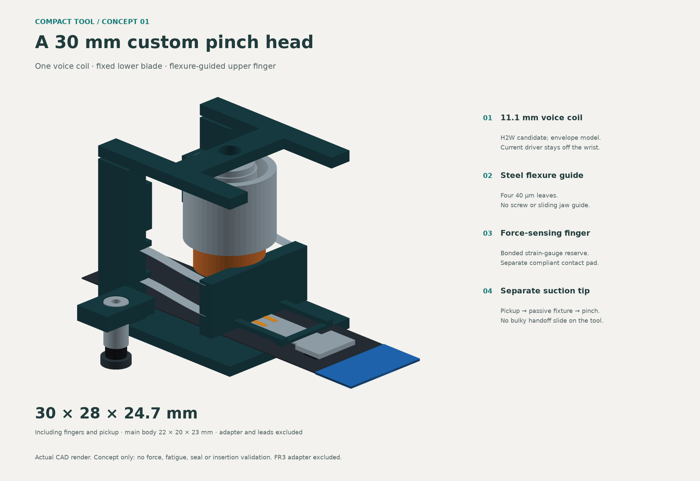
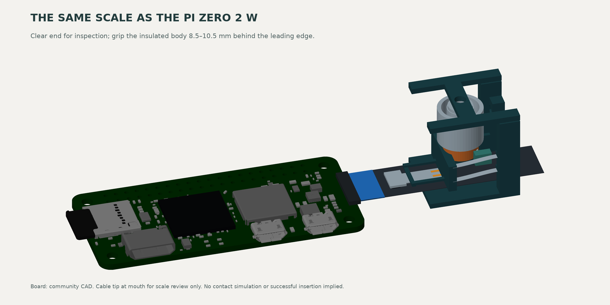
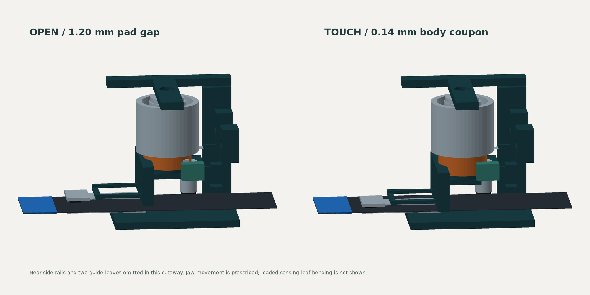
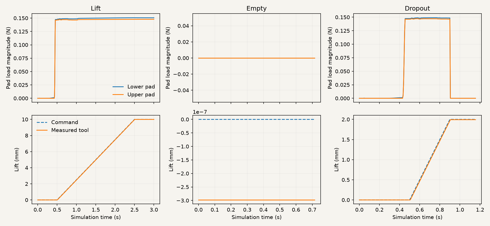
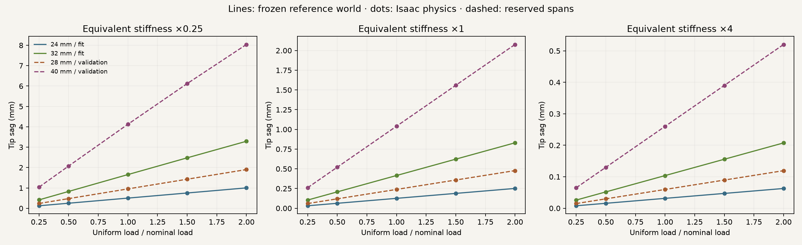
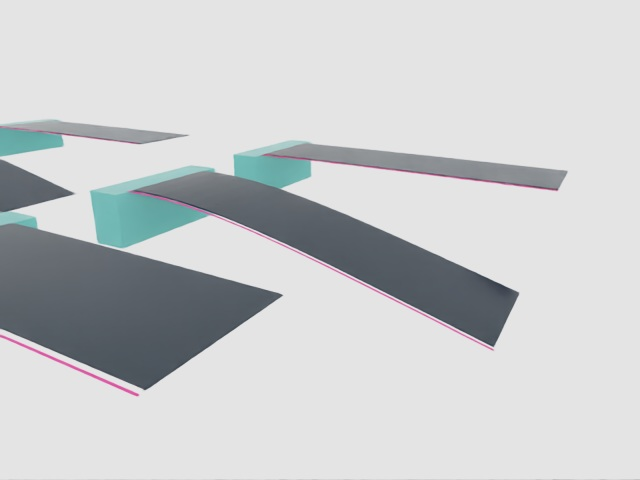
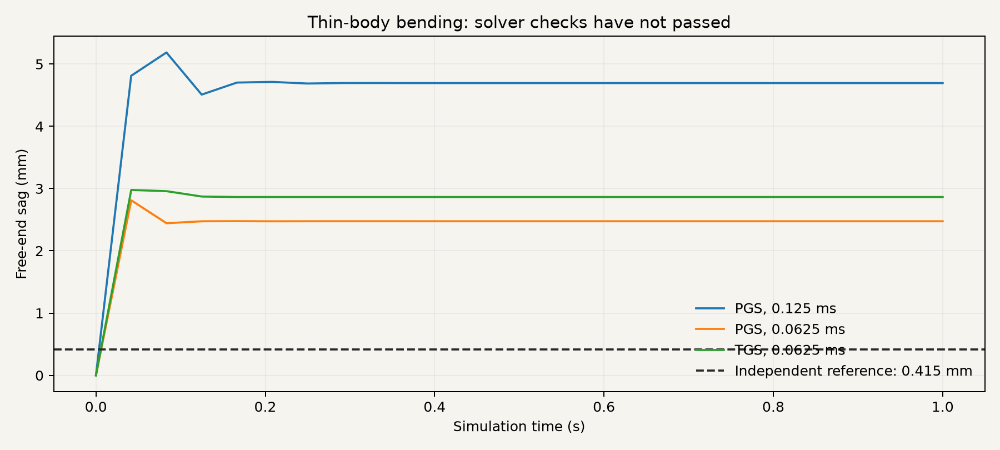
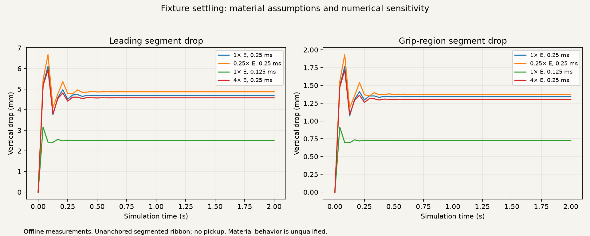
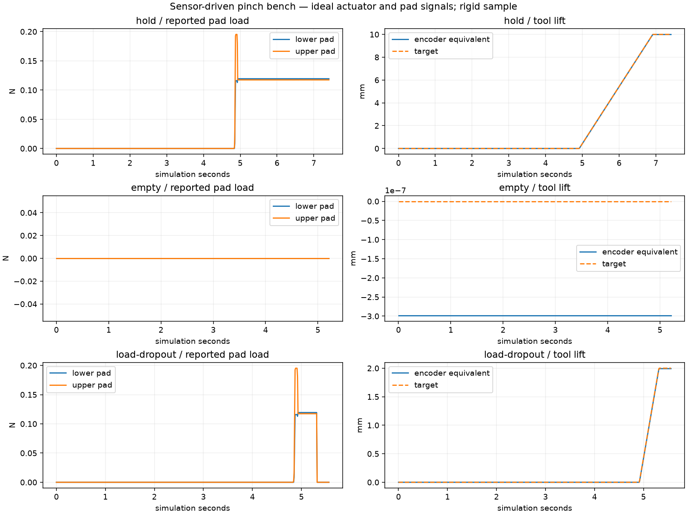

Compact custom gripper / design review
A smaller head for the ribbon cable.
One voice coil, thin steel fingers and a separate suction tip. The complete modeled head is 30 × 28 × 24.7 mm.

Pinch the insulation.
The fixed lower blade supports the cable. A moving upper finger closes on a 2 × 6 mm pad, positioned 8.5-10.5 mm behind the leading edge. That leaves the modeled contacts and stiffener exposed for inspection.
Four steel foil flexures guide the moving assembly. A separate sensing leaf bends under pad load, with space for bonded strain gauges. The metal spring parts are not proposed as 3D prints.
Keep pickup separate.
The offset vacuum tip lifts the cable onto a passive presentation fixture. The robot releases suction, repositions and pinches the supported end. This keeps an extra handoff slide off the wrist.
The fixture, suction seal and complete handoff still need testing. The proposed pump, current driver and sensing electronics stay off the tool.

Watch the jaw travel.


Twelve sampled jaw openings show no overlap between the moving assembly and selected fixed components. A separate 51-position bounds check gives 5.5 mm minimum tool-to-board/socket separation in the assumed straight approach. These screens exclude the full robot, adapter, cable contact and manufacturing tolerances.
The preliminary beam calculation needs about 0.235 N from the actuator for an exploratory 0.15 N pad load, against a 0.27 N continuous rating. The remaining margin is modest. Wiring forces, temperature, fatigue and actual cable retention still need evaluation. This is not FEA or a verified damage limit.
The actuator and the files.
The actuator candidate is the H2W NCC01-04-001-1X. Our model uses its public envelope dimensions with provisional internal details. It needs custom guidance, a current driver and position feedback. The suction envelope represents a Schmalz SUF 3-sized tip; exact sensing parts remain unselected.

CAD and beam calculations · Clearance and sampled sightlines · File identities
The USD files reopen in the local USD library. This design has not yet been run in Isaac physics. Existing commercial grippers and the earlier mechanisms below remain comparison options.
New: watch the flexible-cable motion pilot.
New: cable source dossier and failed bending checks.
New: side-entry handoff geometry and fixture CAD.
New: sensor-driven physical pinch bench, with empty-grasp and load-loss tests. Full desk-to-PCB execution remains unfinished.
Earlier compact candidate: PGEA mounted on the FR3 — scale and clearance review. The larger PQ12 design below remains the earlier comparison.
Mechanical design / mounted motion
Vacuum first.
Then a supported grip.
Commercial actuators, custom printed parts, and a lower finger that moves underneath the ribbon after pickup.
We kept the two independent motions from the simulated tool and built this first CAD layout around actual Actuonix PQ12 geometry.

The new mounted recording uses Isaac rigid-body physics. The earlier standalone animation farther down prescribes the ribbon shape. Neither demonstration establishes vacuum retention, cable contact forces or grip stability; the force-sensing cartridge is still a space reservation.
Motion pilot / experiment 038
The fingers lift a flexible cable end.
The compact tool closes on an insulated part of the presented 200 mm cable, using pad loads and actuator displacement feedback. Its tail rests on a support. Cable motion comes from joint forces and contact; there is no attachment joint or scripted cable movement.
Final controller state: contact_hold_complete.
Measured tool lift: 9.992 mm. The original material point under the pads
rose 9.973 mm in the separate offline check.
That measurement never enters the controller.
Presented cable
The fingers begin with a 1 mm opening. The pad footprint is 9–12 mm behind the tip, outside the assumed 4 mm exposed-contact strip. This is a controlled starting placement, not a camera-guided desk pickup.
Lost feedback
A separate trial zeros the pad-load signal during lifting. This tests a sensor fault, not a physical slipping event.
Watch the stop test
The full cable has 100 articulated sections, variable width and two assumed terminal reinforcements. This contact pilot uses a 0.125 ms timestep. The short-strip bending benchmark below uses a finer timestep and does not qualify these full-cable contact dynamics. Friction, damping and actuator response remain declared assumptions; only the tool pads have collision geometry.
The next integration is the loaded tool on the FR3, with whole-tool clearance and camera evidence of retention and a visible leading edge. Current completion means bilateral contact was held; camera verification, suction, desk pickup and insertion are still separate work.
All case results · Positive report · Controller observations and commands · Methods and remaining checks
Assumed-world calibration / experiment 037
Watch the cable follow the reference curves.
We can build a simulation proof of concept around a declared cable model. This experiment checks whether Isaac reproduces that model's static bending responses. The reference properties remain assumptions; they are not measurements of the purchased cable.
The left view shows independent test strips; the right shows a close-up. The red curve is the reference shape, used for offline inspection only. Isaac advances the cable under gravity and joint forces. No controller commands its shape. Replay is slowed sixfold; the experiment covers one simulated second.

| Cases | Passed / total | Largest relative error | Largest absolute error |
|---|---|---|---|
| Fit | 30 / 30 | 0.29% | 1.86 µm |
| Validation | 30 / 30 | 0.22% | 4.30 µm |
Inspect each reserved case.

The acceptance check requires at most 5% tip-sag error and at most 1% of reference sag in the final 50 ms of tip motion. Passing establishes this static response approximation only. Full-length deformation, twist, damping transients, desk contact, suction and insertion remain separate tests.
Both errors are reported because a large percentage can be a sub-micrometre difference in the smallest bends. The original 5% relative-error criterion is unchanged. Fitting centerline audit · Validation centerline audit.
The earlier gain-only attempts barely changed the error. Reducing numerical joint viscosity made the static response much closer to the reference. Artificial body drag remains a settling aid; neither damping term is identified real-cable behavior.
The first broad fit still missed four stiff, lightly loaded cases. Its complete results and 90-case recording remain available. The refined run uses a smaller timestep; the acceptance criterion remains 5%.
A measurement correction, followed by a fresh run.
The first refined reports showed 29/30 passes in each split. A rotation conversion lost very small angles when a single-precision quaternion's scalar rounded to one. The corrected endpoint calculation normalizes the quaternion in double precision and rotates the offset directly. This changes scoring, not the cable's physics settings. The earlier reports remain available: fitting and validation.
The results above come from complete repeat runs with corrected measurements, including a fresh 50 ms settling window. These repeat the same reserved cases; they are not an additional unseen test set. Raw poses are archived, and a separate SciPy calculation checks every final sag and settling result: fitting audit and validation audit.
Next: make the full cable behave under contact.
| Bench | What we will check |
|---|---|
| Full cable and stiffeners | 200 mm profile, both terminal reinforcements, mass, resting shape and mesh/timestep sensitivity. Short homogeneous strips are only the first check. |
| Desk and fingertip contact | Support height, penetration, force balance and controlled slip across declared friction assumptions. |
| Flexible-cable pickup | Lift with exposed contacts kept clear; compare direct pickup and presentation-fixture handoff. Detect retention and slip through camera and pad/pressure signals. |
| Insertion entry | Only after pickup: leading-edge visibility, bounded alignment, edge collisions, buckling and stop/retract behavior. |
We can develop these inside the declared assumed world before buying hardware. Damping, suction and damage behavior still need explicit models; static bending agreement does not supply them. Read the contact-bench plan.
Cable evidence / experiment 036
Match the cable. Then test the physics.
We have pinned the Raspberry Pi 200 mm Standard–Mini shielded camera cable to its revision-two outline. The new fixture model includes the 11.5 mm body, the wider 15-pin end and both reinforced ends. Terminal lengths, thickness, stiffness and friction remain declared assumptions.
A short bending test exposes a problem: the simulated sag depends strongly on solver settings and exceeds an independent calculation. A steady-looking cable is not enough. These runs do not qualify pickup or insertion training data.

| Solver / timestep | Final sag | Reference error | 5% check |
|---|---|---|---|
| PGS, 0.125 ms | 4.694 mm | 1030.9% | Failed |
| PGS, 0.0625 ms | 2.475 mm | 496.3% | Failed |
| TGS, 0.0625 ms | 2.864 mm | 590.0% | Failed |
Watch PGS, 0.125 ms · Report
Watch PGS, 0.0625 ms · Report
Watch TGS, 0.0625 ms · Report
The full-cable movie checks that the revised profile runs in Isaac. It is gravity settling on a fixture, with no pickup, suction or controller. The numerical failures above still apply.
The next dataset will record synchronized camera and measured tool signals, bounded actions and failures. Simulator geometry stays in offline labels and evaluation. We will establish a sensor-feedback baseline, then imitation learning, before considering constrained reinforcement learning.
Step 2 / handoff layout study
Give the lower finger room to enter.
The compact gripper approaches from the side of the ribbon so its housing stays beside the cable tail. We are keeping both a presentation fixture and a movable suction pickup as options. No hardware choice is final.
The left view shows a prescribed approach and closure around a stationary cable reference. The right shows the 30 mm relative travel a suction pickup would need in this layout; its cable stays on the desk. The purple cylinder is a cup clearance envelope. There is no vacuum or grasp physics in this video.
Contact clearance
Turning the tool also turns the pads: their footprint is now 3 mm across the cable and 6 mm along it. Centered 12 mm behind the tip, the pads clear the assumed exposed-contact strip, including the stated placement and yaw bounds.
Fixture access
The supplier meshes clear the desk and fixture in the conservative swept-bounds check for the modeled approach and jaw closure. The smallest separation is about 3 mm. Robot, bracket, tubing and pickup hardware are outside this check.
The next uncertainty
The fixture leaves 20 mm of cable unsupported. Its end can sag. The flat reference in this video does not prove stable presentation; gravity-settling tests are separate.
Gravity test: the cable model needs refinement.
Four Isaac runs let a 100-segment ribbon settle freely on the fixture. Halving the timestep changed tip drop from 4.689 mm to 2.508 mm with unchanged material properties. The numerical sensitivity is too large to use these runs as a material prediction or pickup qualification.

Nominal run · Softer assumption · Stiffer assumption · Half-timestep run · All results
Geometry report · Earlier contact-footprint comparison · Fixture concept STEP · Fixture concept STL

Fixture geometry is a design candidate. Fastening, edge radii, contact materials, cable deformation and placement/release remain unqualified. The suction slide and its mounting are not selected or modeled.
First contact primitive / deterministic feedback
Close, lift and hold using pad feedback.
The compact fingers now close on a supported rigid sample in Isaac physics. Bilateral pad load allows the lift; encoder feedback tracks it. There is no attachment joint or scripted sample motion. This bench is separate from the FR3, ROS and DINO camera loop: full desk pickup and Pi insertion are not demonstrated yet.
Final repeat: 14,827 physics steps at 0.5 ms. Tool lift 9.992 mm; offline sample lift about 9.972 mm. The sample pose is used only for scoring, never for control.
Lost load signal
A forced sensor dropout latches a stop. The lift reference freezes at 2 mm; additional measured motion is about 0.0025 mm in this simulation.
Watch the stop testFirst run failed
The sample tipped off its support before contact. The controller detected no bilateral load and never lifted. We corrected the support placement before repeating.
Inspect the failed run
What this experiment does—and does not—validate
The sample is a rigid 30 × 11.5 × 0.3 mm plate, not the full flexible cable. It has no contact/stiffener regions and does not verify a safe cable grasp location. Only pad boxes collide on the tool. Friction, inertia and the finite-force position drives are assumptions; signals are noise-free. The controller runs at the physics rate, not a verified hardware communication rate.
The observed pad loads are about 0.12 N. A 0.8 N cap on our ideal position drive does not reproduce the manufacturer’s force-control mode or prove this force is attainable on the real PGEA. The sensor adapter reports aggregate contact-load magnitude, not a calibrated tactile array.
Camera retention evidence, ROS transport, vacuum pickup, dynamic FR3 mounting and Pi insertion remain separate implementation gates. The completion state is “contact hold complete,” not task success.
Case summary · Positive report · Sensor trace · Controller, assumptions and remaining integration
Current candidate / mounted layout
The compact tool, on the robot.
This separate candidate scene replaces the old mechanism with the PGEA, custom fingers and a provisional side bracket. The robot is parked at the existing workcell pose. The fingers project 107 mm from the flange, so their scale can now be judged against the wrist, PCB and camera.

Six seconds, 72 frames. Stationary robot, prescribed jaw motion and zero physics steps. This is a layout review, separate from the earlier PQ12 physical joint tests below.
Bracket fit
A 63 mm flange ring and short side arm meet the gripper’s broad-face mounting holes. Fixed-body intersection is zero; eight sampled jaw openings also clear the bracket.
Parked clearance
Conservative bounding-box separation is 13.9 mm to the macro-camera envelope and 86.6 mm to the board. These numbers apply only to this stationary pose, not an insertion path.
Still provisional
Fasteners, locating fit, stiffness and cable routing remain unqualified. There is no vacuum nozzle yet, and the compact assembly has no rigid-body or contact model.
Adapter concept STEP · Geometry report · Render trace · Sources, reproduction and remaining work
Compact candidate / geometry review
Two small fingers on a commercial gripper.
The PGEA handles the jaw motion. Our proposed fingers bolt onto its front faces and reach 12 mm forward. Each has a 6 × 3 mm contact pad; a 0.5 mm inward offset lets the pads close across the cable thickness.
Eight seconds, 96 frames. Actual supplier geometry and custom finger CAD rendered in Isaac. The cable coupon stays fixed; this is prescribed motion with zero physics steps, not a demonstrated grasp.
Mounting
Each finger has a 3 mm mounting plate, one nominal M3 × 5 screw and one locating-pin concept. Nominal screw engagement is 2 mm into the drawing’s 3 mm threaded depth. Pin retention and tolerances are unresolved.
Checks passed
No opposing-jaw or housing overlap at 23 sampled openings. Separate coupons at 11.5 and 16 mm width, and 0.14 and 0.3 mm thickness, touch both pads without solid penetration. Those thicknesses remain simulation assumptions.
Still to establish
Finger stiffness, edge radii, pad material, retention and slip. The robot adapter, vacuum nozzle, PCB clearance and macro-camera visibility are not covered by this standalone study.

The imported CAD has an 11.4 mm jaw gap, whereas the drawing specifies 1–11 mm. We rebase each jaw by 0.2 mm without scaling the geometry. The supplier O-S geometry has the 89 mm side cable exit; the catalogue’s suffix mapping still needs confirmation before ordering.
New milestone / actual Isaac physics
The tool now moves with the FR3.
The CAD assembly is attached to the robot through a provisional flange adapter. Deployment and clamping are separate physical sliding joints. Position and velocity feedback govern the test sequence; object poses and simulator cable state are not controller inputs.
44.009 seconds of physics, 44,009 steps and 1,100 recorded frames. Empty tool; assumed actuator dynamics; no cable or PCB in this commissioning scene.
Mounted mechanism
Settle, move the shoulder 0.1 rad (5.7°) and return. Lower the parked jaw, deploy 18 mm, close, open, withdraw and raise.
Measured response
Peak tool speed 6.75 mm/s. Largest transient tool tracking error 0.021 mm. Every phase passes separate position and velocity settling checks.
What remains
The 470 g payload is an estimate. Actuator backlash, thermal duty, vacuum sealing, cable contact and pinch-force sensing still need models and tests.
Watch each of the nine recorded stages
Read exactly what this physics model includes
Three rigid tool bodies join the seven-axis FR3 articulation. Both prismatic joints have 20 mm travel. Their surrogate drives use 8,000 N/m stiffness, 80 N·s/m damping, a 5 N force cap and an 8 mm/s speed cap. These are commissioning assumptions, not an identified PQ12 motor model or a safe pinch-force specification.
Per-part convex hulls approximate collision geometry. Joints filter collisions between directly connected bodies. The monitor reported no contact pairs in the free-space cycle. This does not establish full workcell clearance or internal running fits.
The adapter is an aluminium envelope with no qualified bolt pattern or structural analysis. The orange sensor block remains a visual reservation. This accelerated mechanism test does not qualify the PQ12's 20% duty cycle.
Stop during an arm move
Cancel halfway through a planned 0.1 rad shoulder move. Maximum measured post-cancel excursion: 0.00004080 rad. Read the report.
Stop while the finger deploys
Cancel midway through the 18 mm deployment. Maximum measured tool excursion after cancellation: 0.0066 mm. Read the report.
These are individual simulated hold tests with the same controller revision as the cycle above. They do not establish hardware protective-stop performance or task-level recovery.
Twenty-second mechanism review
See how the finger gets underneath.
The lower finger begins sideways and above the suction tips, so it can approach a ribbon lying flat on the desk. Only after lifting does it lower, slide underneath and close.
240 rendered frames at 12 fps. Zero physics time advanced. Travel is illustrative, not a measured actuator speed profile.
Pick up and lift
Vacuum support touches the cable. The finger stays raised and parked to the side during the illustrated 35 mm lift.
Deploy and close
Lower the parked finger, move it 18 mm underneath, then retract the clamp actuator 10 mm toward the ribbon.
Open and stow
Open before withdrawing sideways. Raise the finger again before lowering the tool back toward the desk.

What is in the assembly
Two axes. A fixed vacuum support.
What we buy
Two PQ12-30-6-P actuators are the present design candidates. Their body and shaft geometry comes from the manufacturer's STEP assembly.
Vacuum cups, metal guides and bearings are represented by size envelopes. Exact guides, drive electronics, valves and the vacuum supply still need selection.
PQ12 datasheet (PDF) →What we make
Printed clevises, a deployment carriage, vacuum shoe and finger carrier adapt the motion components to the cable.
The long frame and thin lower finger are represented as metal. We are not relying on an untested printed sliding surface or a thin printed edge to hold alignment.
Inspect the custom parts →What the CAD check establishes
The desk clearance changed the design.
An early layout put the lower finger below the suction plane while parked. It would reach the desk before pickup. The current revision adds an above-plane stow position and moves the finger's vertical support beside the ribbon tail.
No desk intrusion or overlap was found among the checked solids in those poses. This check excludes the supplier actuator shells, same-motion-group pairs, cable, sensor reservation and unmodeled fasteners. It is not a continuous collision proof.
Read the bounded geometry check · Read the component manifest
Why actuator position alone cannot set pinch force
The PQ12 specification lists 0.25 mm backlash and ±0.1 mm repeatability. Its P version supplies potentiometer feedback, not a force sensor. We need a designed compliant load path and measured force feedback before claiming gentle clamping. The orange block is only reserved space for that work.
The published maximum duty cycle is 20%. Continuous repeated training motions would need a suitable duty schedule or different actuators. Neither low-force performance nor service life has been demonstrated here.
Open the design yourself
CAD files and the build recipe.
All downloads are for fit review. They are not released manufacturing files. Screw retention, running fits, print orientation, structural loads and the force cartridge still need engineering.
The whole task / simulation first
Seven skills. Where we actually stand.
We have tested useful parts of the pipeline. The new tool does not yet pick up and insert the Pi cable end to end. Real hardware tests remain deferred while we build the simulation proof of concept.
| Skill | Evidence so far | Still needed |
|---|---|---|
| 01 · See the entrance | Pi scenes, macro-camera study, entrance labels, OpenCV + DINOv3, held-out synthetic review and ROS freshness checks. | New-tool visibility, independent glare/occlusion tests, calibrated uncertainty and metric cable-to-opening estimates. |
| 02 · Pick up gently | Commercial-actuator CAD, sampled geometry audit and mounted empty-tool physics. | Compliant cable, vacuum/pressure model, force-sensing load path, slip/damage evaluation and direct-vs-fixture comparison. |
| 03 · Inspect and orient | Inspection concept and labelled cable-end features. | Stable held-cable simulation, inspection poses, end-frame estimation and second-view/regrasp behavior. |
| 04 · Align clear of contact | Offline image-space edge fitting, dry-run motion contracts and actual joint-drive commissioning. | Measured visual Jacobian, new-tool clearance corridor and closed-loop camera-guided approach. |
| 05 · Contact and insert | Historical generic contact experiments; these do not qualify the current Pi task. | Qualified connector/cable contact, tactile feedback, bounded insertion, collision/buckle/slip detection and stop/retract. |
| 06 · Verify and latch | Connector geometry and preliminary slider segmentation. | Dynamic latch, seating evidence, separate latch action and false-success rejection. |
| 07 · Recover and repeat | Observation-contract fault tests and measured joint cancellation. | Task-level fault injection, bounded retries/regrasps, safe stops and independent repeated-trial statistics. |
Earlier PQ12 layout: remaining work
Finish the force-sensing and compliance cartridge, select actual guides and retention hardware, qualify the provisional FR3 adapter, then check the whole tool against the camera and PCB.
This larger layout does not inherit the old tool's clearance results. Dynamic pickup, slip and insertion testing come after those changes are represented in Isaac.